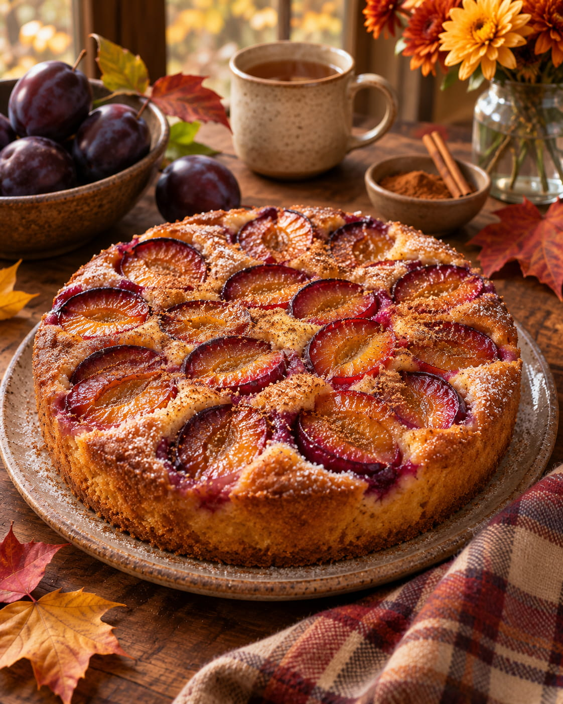

Classic Plum Pie Recipe
Home

Description
This classic plum pie is inspired by the beloved New York Times recipe, famous for its simplicity and delicious flavor.
It features a soft, buttery cake topped with juicy, slightly tart plums and a touch of cinnamon.
Perfect for a cozy autumn afternoon with a cup of tea.
Ingredients
- 150 g granulated sugar
- 115 g unsalted butter, softened
- 125 g all-purpose flour
- 1 tsp baking powder
- 2 large eggs
- 12 small purple plums, halved and pitted
- A pinch of salt
- 1-2 tbsp sugar, for topping
- 1 tsp ground cinnamon
Steps:
- Preheat the oven to 175°C. Lightly grease a round cake pan (approximately 23 cm in diameter).
- In a large bowl, beat the softened butter and sugar until light and fluffy.
- Add the eggs, one at a time, mixing well after each addition.
- In a separate bowl, combine the flour, baking powder, and salt.
- Gradually add the dry ingredients to the butter mixture and mix until just combined.
- Spread the batter evenly into the prepared cake pan.
- Arrange the plum halves on top of the batter, skin side up.
- Sprinkle the plums with cinnamon and the remaining sugar.
- Bake for 45-60 minutes, until the cake is golden brown and a toothpick inserted into
the center comes out clean.
- Allow the pie to cool slightly before serving. Enjoy it warm or at room temperature!